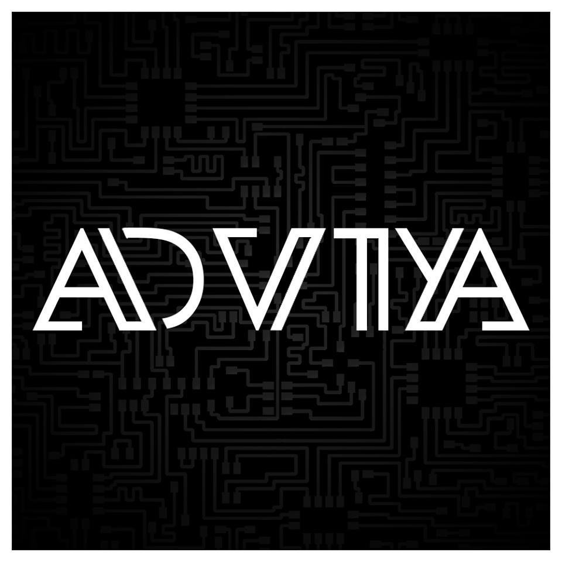

Advitiya
The annual technical festival of IIT Ropar.
Its first edition was held in the month of March (2017) , this is the story of its inception. The story of building Advitiya , experiencing Advitiya , conducting Advitiya.
College Fests are fun, it’s an old chestnut, but ever wondered where organizing that fest can get you to? Or what you can get being a part of the organizing team?
A College Fest is a team effort and a group chef-d’oeuvre. They bring the most awaited time of the college life but the amount of work that goes in organizing them is unfathomable. The sheer stress and pressure the students face in making it a successful event is overwrought. So here’s a downright in-your-face points to give you enough reasons to take part in the organizing team for the college fest.
- You get to deal with the last minute screw ups :Now this is where you prove your mettle. There’s zero possibility that all people who have registered will show up or all the expected guests / stars will arrive on time. But when you put your brain to work at these times, any crisis can be averted LIKE A BOSS
- You learn that it only takes a team to make something as big as a fest : A team creates synergy where the sum is greater than the parts and fosters flexibility and responsiveness. It promotes the sense of camaraderie and nurtures your skills as you work through your tasks. You even get to deal with the disagreements and test your tolerance levels.
- You realize that communications skills are important than anything else :Do you think the sponsors will be waiting with cash in their hands to offer? Do you think convincing a celebrity to perform in your fest is just that simple? You have never been so wrong in your life then. It takes skill to convey your ideas vocally. You need not be Leonardo Dicaprio to do random inception sh*t to plant an idea. Communications skills are important than anything else in these jobs and you get to learn loads of it.
- You learn that event organization is a very respectable profession :: Ever wondered why private event organizers charge exorbitant money to organize events? Because it basically sucks the life outta’ you. No sleep, mounting pressure, deadlines, and endless screw-ups, it only gets worse when you know none of your plans are actually working. Don’t worry in the end you will come smoothly out of it, wounded but victorius.
- You can go Pablo Picasso on all the problems around you :Creativity is one aspect which determines how entertaining a fest can be, the more creative ideas you make the better the people are going to enjoy being there. You can unleash the creative self in you and make a significant contribution, be it in social media promotion or decorations.
- You get to meet non-identical people and ITS FUN :Bored of seeing the same people in your college? Try being a core committee member or a event representative. Your log list will be flooded with calls of different people whom you will meet in your fest. Hot girls, Intellectuals, Professionals, and at times douches as well but that’s alright, this is probably the most fun part of the entire saga of organizing a fest.
- In the end you realize you were a part of something very big, so big that its beyond your comprehension : You take a look back to see what you have accomplished in making a successful event, you will realize it has given you more than what you have given to make it. You will feel like you have just completed a TV series… “ Now what? “. The three or four sleepless days you spend in making something comes to an end and you loiter around thinking, “this was my idea; that was supervised by me, it was so fun”. You will only wish it all comes back again.